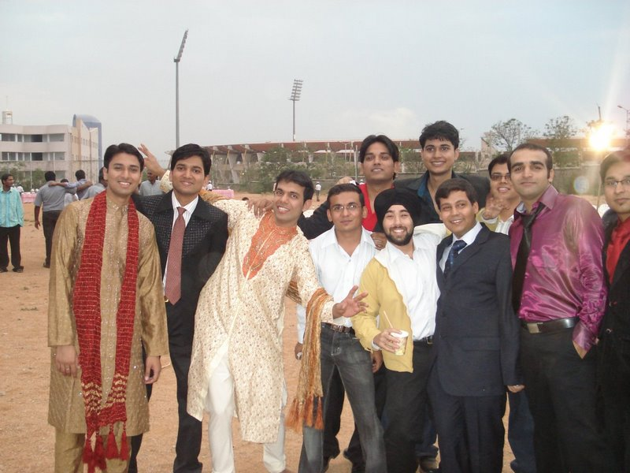

The Yearbook - Commemorating 2005-09!
Saurav Khurana's profile information
Name - Saurav KhuranaBirthday - 15/04/87
Email - khurana.saurav@gmail.com
Address - # 445, Sector 8, Karnal,Haryana
Phone - 0184-2230822
Webpage - Link
Hobbies - table tennis,cricket,travelling
What would you want to be remembered as - khurana
Future Plans - would be revealed in the future.....
Testimonials written to Saurav Khurana
Saurav Khurana's Album

yo buddies :)

wid frnds at Angeethi...

@ Farewell...
Testimonials
For Randeep Singh Bangabanga has a heart of gold....i was volunteering for the placements...nd as was the case...banga and adi were working day in and day out waking up at 4:30 in the morning and hardly being able to sleep....specifically, me and ojas brought lunch for the placement coordinators and volunteers from subway....but this soft spoken kind hearted soul would forgo his lunch so that the ones appearing for the interview could have them
 ....his dedication and his commitment for the task at hand is unparralled
....his dedication and his commitment for the task at hand is unparralled  .....
.....
visited him in Amritsar and he was a gr8 host....really had a nice time visiting the golden temple wid him and den having a sumptuous lunch at his place
...
he is devoted when it comes to his religion...i remember in first yr when he would go to scbad early in the morning on sundays for the morning kirtan....whenever der is Baisakhi or Gurupurab....he can be seen busy organising a sadh sangat along wid dharmeet
you have been a gud frnd and i certainly believe dat you would achieve gr8 heights in your professional career
For Pankaj Saini
i first met him in the counseling session at kuk univ...then he was sporting a thick beard... i had an impression of him as a serious guy den....now i understand him as one of the most cool headed chaps....
....
it was thru' him i got in touch wid Akansh khurana...who is another gem of a person
...
i must admit that if it was not for saini it would have been a difficult sailing through all these hssm courses..be it social, globlo or industry....he has tought them all
.....having a penchent for fiction nd then being an avid blogger....his verbal skills are exemplary....i remember one incident which he told me while we were in chandigarh appearing for Aimcat, when he was given candies for being able to solve maximum number of questions in a grammar handout  ...well dat certainly left a gud impression on the girls of his class as was desired ....
...well dat certainly left a gud impression on the girls of his class as was desired ....
it is always fun to chat wid him....
he wud not appear for FMS, XAT etc...nd i appreciate his commitment for getting into IIMs...gud luk for the same
a nice chap nd a gud frnd

For Aniket Sharma
one of first interactions with him date to when he was the room mate of bharat...well then he used to exhaust all the matchsticks for lighting his cigarettes..which bharat used for lighting incense sticks
 ....
....
come felicity-06 and we were managing dominos stall together for day-1...later interactions wid him were in the mess where he used to narrate his acts of daredevilry while he prepared for JEE
den we were CAT buddies and it was always insightful to discuss wid him the preparation stuff....
he has been eating in yuktahar dese days.....nd dats where most of our interaction happens....where his favourite passtime is shikha ya mux ki lena
 ...apart from savouring a plateful of salad......it is smtimes funny to see the way he loughs ...
...apart from savouring a plateful of salad......it is smtimes funny to see the way he loughs ...
well I distinctly remember one incident in january dis yr wen we were headed to give mock XAT...which we finally cudn't appear for mostly because of wrong judgement on my part
 ....i must admit that this lanky figure has patience and deals with situations in the most pragmatic manner ....
....i must admit that this lanky figure has patience and deals with situations in the most pragmatic manner ....
gud luk
For Karan
well maroo was wingmate in first yr for some time....den used to be the one who was serious abt his studies
....used to talk abt CAT nd MBA in the first yr itself !!
Come 3rd yr, first felicity and den cat prep....used to speak to him and he was kind enough to give his invaluable gyaan
....well the best thing which i have observed is his initiative taking abilities....started a google group for CAT, organised sessions with the seniors....he also has this clarity of thought about one's career options
has reviewed my forms at a number of occassions and yeah is kind enough to lend his bike
....
wish u luk and hope u will make the right choice
For Nitin Jain
Part2
bas inke room par chale jao....aur bc ki koi limit nhi....
2nd yr ki garmiyon ki chutti main inhone kaamal hi kar diya...it was unbelievable that ninja cud even be so daring to seriously engage with someone...watch a
movie( wat if dat movie was Water
)...go out for dinner....show the campus....
sometimes wud get defensive abt yuktahar but that was also understandable because everyone wud blame just one person for anything trivial or serious....but
despite of all the criticisms and numerous suggestions, you have been able to get a mess as good as yuktahar running which requires immense perseverance
....
at times misunderstanding wud develop between us but such has been the understanding amongst us that the things wud get sorted out in a flick of a second and
it wud appear that nothing evr happened....but i wud also mention that its always good to watch one's words wen burdened under the feelings of anger....at the end i wud recall our discussion here....take extreme caution when doubting the intentions of ur frnds...judge persons not by ur assumptions but by thier actions
a little bit of planning and a structure can do wonders to you but despite of that i dont only believe but i am sure that u will bring laurels to IIIT...
u have been there when i needed a friend the most....u hav been supportive and i cud always count on you in the times of need....thx for being such a gr8 pal...am lucky to hav a friend lyk you
For Nitin Jain
Part1
inka gmail id: nitinjainninja
ninja maane to ekdum cool unless provoked abt something which contradicts his belief....can multitask almost so naturally
i have had the pleasure of ur company since the day we started our journey in IIIT....
the best part is your commitment towards ur values...u wud not sacrifice them for anything....
inke itne kisse hain last moment ke ki kya kahen(passport...jo pichle kai mahino se yeh try kar rhe hain, bookin the train tickets to hometown a day before,
registering for the courses just wen the portal is abt to get closed and only some strange sounding courses are available for registration, coming late to
the campus after vacations and then paying the fine...and so on) par wen it comes to academics ther is no compromise...ramu aur jayanthi ki to class main
lene main isse bada maja aata tha....his learning curve rises exponentially and he has superb understanding of the concepts....aise kitne hi courses hain jo
sirf ninja hi samajh paya hai aaj-tak in the real sense of the word...(sd&e, prp...) ek baar agar samajh leta hai...to u cannot beat him...he most easily
emerges as the real ece bond with no competitors...
campus main har event main part leta hai...sports main awwal...tt,footbal,cricket,athletics( he recently won a medal for himself),carrom....aur haan organise
bhi badia kar leta hai (c/o renaissance) if u hav the patience of explaining every nut and bolt of the organisational aspect
...bas ek dua karta hoon
tumahare liye...kabhi kabhi common sense is very useful
he has a big heart...u go to his room any time if you want to njoi some of the delicious home made preparations and he wud always oblige
....
inhe meethai bahut pasand hai....i still remember both of us stopping at Delhi waala sweets in Mehdipatnam after we came from Ocean park....dat was the day
wen i realised that how much u lyk sweets....
ofcourse we wudn't have won those ECE online events had u not been der....
contd
For Abhishek Sainani
well scientist ko to saare jaante hi hain....he is personally a very good person....hav known numerous occasions when he stood by atul in the toughest of the times....
wen he is around...the atmosphere becomes lively...because he has this knack of poking his nose into any discussion with his fattas
....
had really a gala tym wid u on the tirupati trip...especially the way u played DumbC
.....but i was really pissed off wen all of us wer der at the main gate nd u were der in ur room  ...hope u wud be a little more alert in such situations ....
...hope u wud be a little more alert in such situations ....
aur haan i remember dose first yr days...wen he wud sit on the front bench and den sleep with his mouth half open
...
wud always remember ur peculiar way of smiling
...
gud luk
For Sandeep Y V
I have always seen yv with a big smile on his face even in the toughest of the times....well it was thru CAT GD preparations that we got in touch....this guy is a real genious...he was the only person who got shortlisted for both DeShaw and MS....nd den got LIK(ed)....it takes real courage to not to appear for L...well that is called listening to one's heart than falling for a lucrative MBA seat
....he wud very cleary say that he is only interested in IIM-ABC...nd i must say that he is ABC material :^)^...
we have accompanied each other on numerous occassions to those cat sessions....
and yeah his bike is always availaible...
keep smiling dude...am sure you will be able to launch your own venture
For Mridul Gupta
by jove...bande ki gk to aisi hi ki koi bhi fact bolta hai to saamne waala kaise counter kare pata hi nhi chalta...
....banda ke view pts kafi interesting hote hain....u never get bored when talking to him because ye beech beech main harkate karta rehta hain ....pehle do saal mera padosi tha wing main....aur dhingra ka movie partner ....bas mujhe aaj tak samajh nahi aaya ki yeh seedha kyun nahi chalta 
overall yeh smart, cultured aur urbane type ka banda hai....gud luk dude for ur research...hope u make it big
For Sunil Soni
soni ko main first yr se jaanta hoon....neeche waale floor main rehta tha(aur aaj bhi ussi room main rehta hai
)...well jyaada tar hum mess main hi milte the where he used to tell abt his inter days....isne aur narendra ne khub masti ki hai inter main ....
plays good volley ball
...bande ke maths to awesome hai........you couldn't help but just gape at his quant scores..used to give time for cat preparations even though he had commitments at Amazon.... ....aur haan iski bike ne bahut saath nibhaya hai ....bhai teri bike na hoti to shayad hamari nagarjuna sagar ki trip bhi na hoti !! ..keep smilin dude...gud luk For Mohit Goyal
goyal has the ability to cheer up the atmosphere whenever he is around....sabka dil laga rehta hai iske childlike character se....
..was my wingmate on the grnd floor and we had some memorable outings as well..IPL match,bewoulf:bechara daddu to movie dekh hi nahi paaya tha ,nagarjuna sagar trip....
india-aus ke matches main jab bhi aus harti thi to maglu ko bumps milte the.....
...kai baar to situation sense kar leta tha...aur phir room se gayab ho jaata tha......kitne bhi bumps de do...support to aus ko hi karega ...
just be as u r....smile always
For Bharat Sankhlecha
bharat aka bharatiya/chhota bharat
well yeh hain laptop guru....hardware main special ruchi rakhte hain....kaisa bhi laptop kyun na ho...uske purje alag hone main der nhi lagti....
ghumne se jyaada khaane main ruchi hain inki...khaaskar chinese/santosh/Dominos/ohries-jeeva....yeh apne size se kai guna khaata hai....mithai khaane main koi competetion bhi nhi de sakta inhe..
...
he lives up to the expectations of the marwari's....hisaab-kitaab karne main awaal hain....akele nain Robocamp-07 ki responsibility bakhoobhi nibhai thi....i had closest interaction with you during the time of Renaissance....we complemented well each other...we would plan the course of action with relative ease....and did eventually brought renaissance to its final conclusion nothwithstanding the immense hurdles we faced..
 ...your xperience as the coordinatior of the robotics club came in very handy ...especially the gr8 deal of contacts ...
...your xperience as the coordinatior of the robotics club came in very handy ...especially the gr8 deal of contacts ...
aur placements main bhi inhone bahut tutorials liye the....kk ke saath kuch kisse bhi hain inke...iski din bhar BC karne ki capacity hai....bas bhartiye ko kissi bhi chez ke liye pehle naa jarur karna hota hai...phir baad main thoda pursuade karne par haan bhi kar deta hai..par thodi bahut nautanki jarur karni hoti hai isse...
...
gud luk chhote...lovely has picked up a gem
For Prateek G V
calm, cool, witty....he seems to me one of the most versatile persons in our batch...well recently he showed me his file of certificates....debates,painting,writing and so on....nd dat too on a consistent basis....
...manages things in a neat manner without much haste....his commitment to his responsibilities is amazing...he wudn't leave any job half-done....be it working for placements, felicity and now Samvedana....
working with you for Renaissance was fun....thx for ur support
....
BC karne ka bhi apna hi style hai iska....lab main yeh aur subroto project kam aur 'chickipedia' jyaada browse karte the
....
gud luk for your endeavours
For Shashank Agrawal
agrawal ji ke saath discussions (minus yuktahar
) kafi logical hoti hain...he hits right der on the target...not trying to bicker at all ....remains cool most of the times...nd yeah...plays good TT...jab inki li jaati hai to yeh chup rehna pasand karte hain.......he works with sincerity,dedication...inke gay-panti ke kisse bhi bade famous hain...
gud luk for ur plans
For Amit
doubt kabra/little kabra/kabbo
call him by any name and after a customary hi-hello...he wud start the outpour of his doubts
...was wingmate in the 3rd yr and it was during the time of CAT preparations that i got to know him better....he wud come to subz room after every AIMCAT and all three of us wud mourn together at our performance.......smtimes debating that time's key is wrong ...well he is more than just the doubts....pichli diwali par iske kehne par hum mandir gaye the...first time in 4 yrs ....chat par gf banane main to bond hai.....has lot of perseverance which helped him keep put at the time of placements....gud luk nd be in touch
For Yogendra Umesh Itankar
Part 2
while we had started the project I always felt that we will achieve it big...and we did
...we would brainstorm together for hours in the lab trying to solve so many intricate issues involved....dat was the best part of it....
isne shuruwaat main BTP report likhi thi...2 page ki...jisme aise statements thi jo mujhe bhi samajh nahi aayi....report mujhe hi likhni padti thi...but he learned along the way and final report isne mast banayi thi...
pehle footbal khelta tha...aajkal TT khelta hai...
hamare grp ka naam,yo-buddies, bhi isse se derive hua hai....yeh ninja, prateek aur aaj-kal AK ki bataon se bahut influence hota hai....
iski conceptual understanding ki to daat deni padegi.....awesome samajhta hai...aur fir he took placement tutorials too
.....bande ne GATE mast phoda hai...and is set to enter IISc or one of those IITs.....
my best wishes for ur success
For Yogendra Umesh Itankar
Part 1
yogi/yogata/ur-g**d-under/yo
yeh hamare grp ka khoob manorajan karta hai...roj apne naye naye kisso se...jinki koi limit nahi ho sakti...jo kuch is prakaar hai..
1. ek baar cricket khelte hue...ran le rha tha...aur aadhi pitch main ruk gaya...reason poocha to bataya ki shot marne ka baad thakh gaya tha
2. shoe laces lene gaya to shopkeeper se poochta hai ke "ispaar expiry date nahi likhi hai ?"
3. aajkal dhoop main ghoom kar patle hone ki koshish kar rha hai
4. post-office jyaga to koti waale..indira nagar waala post office isse pasand nhi....
5. kafi kuch iske mood par depend karta hai...ek baar sab akash ki party par bhaar ja rhe the...to yeh aadhe raste se hi waapas chala gaya kyunki mood nhi kar rha tha...
jab bhi room par kuch khaane ka prg hota hai...to isse pata nhi kahan se smell aa jaati hai....is mamale main iski kismat bahut unda hai...he nvr misses a chance to eat to his heart content....
iska room hamari BC ka default section hota hai....BC iska favourite pass time hai...iski kitni bhi lo...yeh hasta hi jaata hai...
 ...isleye yeh "hasmukh" ke naam se bhi jaana jaata hai...
...isleye yeh "hasmukh" ke naam se bhi jaana jaata hai...
waise he takes his time to open up....it was only in 3rd yr wen he came to nbh...dat we became good frnds...help bhi karta hai..par uske liye aapka
appropriate LEVEL hona chahiye
....
mera BTP partner tha....shuru main kaam kuch jyaada hi karta tha....aur fir used to feel ki main iska kaat rha hoon...kabhi-kabhi argument bhi karte the....end tak aate aate to situation reverse ho gayi thi....i had to constantly motivate him to keep working because the results were not so clearly visible....you used to feel that I am trying to lead which was nvr the case nor any intention....par i feel proud dat we were able to manage it well and most importantly win the war and not just the battles
....
contd...
For Aditya Singal
adi is the epitome of friendship....i still remember when we met for the first tym...u were wid ur father in the queue for booking the hostel
rooms...standing tall with a smiling face....
i cannot recall a single tym when we disputed....
i have such fond memories with you....right from the trip to ocean park, winning first prize in the Ew project, diplaying another one for the Rnd showcase, batch trip , my brother's marriage, shopping, accompanying me to the hospital and so on.....
he wud travel the xtra mile to extend his helping hand to his friends
lykes idling his time with movies...(itni dvds hain iske pass jitni yo-buddies ke pass milla kar nahi hongi
), sudoko, comics,bc...
rarely gets angry...(i remember just one incident of that wid subz)....
i seriously wish that you start working for your MS..(before that he needs to finalise his guide
)...
i am blessed with god's grace to have a friend like you...wish that we remain frnds always
For Richeek
waise to yeh mere saath main hi veerajte the...aur mere system partner bhi the workspace main...par first yr main hamari jyaadi jammi nhi...inhe roz hi koi na koi linux ka version install karna hota tha...aur woh bhi mujhe bina bataye...ek baar to meri itws ki assignment hi uda di inhone
 ...aur jab windows instal karte the to...mujhe guest privelages...aur khud ko admin privlages dete the....
...aur jab windows instal karte the to...mujhe guest privelages...aur khud ko admin privlages dete the.... behcare ravendra ko to system use karne ka mauka hi nhi milta tha.....but the best part was the choice of our passwords for the system....they were typical like "karnal", "windows", "aligarh" etc etc...yeh to tha first yr...
behcare ravendra ko to system use karne ka mauka hi nhi milta tha.....but the best part was the choice of our passwords for the system....they were typical like "karnal", "windows", "aligarh" etc etc...yeh to tha first yr...
come 2nd yr and things started improving for the better...more so because of our common frnds...3rd yr aate-aate to frndship achi ho gayi thi...i was really moved by ur gesture to stay at the hospital(Premier) when i was admitted there even though u had ur commitments for the internship next day
at times i find u very firm on ur stand....remember goin to Kutab-Shahi tombs and then u being unrelenting for watching "chak de" even wen rest of us were exhausted and wanted to come back....and yeah...the rule relaxation for the renaissance event....
yeh hindi ke gyaata hain...and despite of dat he scored an amazing score in GRE...all becuase of his resolve and committment which i admire
...
pizza khana ho to inki company to by-default hai....kahin jaana ho to inhe sabko wait karane main bahut majaa aata hai
oa, i wud say that he is nice friend, mast bc karta hai aur apne doston ke liye iski loyalty unquestainable hai...
For Shikha Aggarwal
shikha:"The sweet little dangerous"
well college ke intial yrs main to koi common circle nahin tha...to jyaada baat nhi hoti thi...
par of late we have jelled well with each other and more so in the past 1 yr...
she is frank and isse chedne main bada anand milta hai...
she is firm on her decisions....jab CAT ki preparation shuru kari thi...to she was the most regular to the TIME classes...par uske baad jab
tyaari chodh di...tab to aimcat bhi poore nahi diye...and despite of this...she managed to get 5 calls
....well dats just the sample of her
intelligence....mess main khaana kam khaati hai...aur bc jyaada karti hai..
her resolve to do what really interests her is what impresses me the most....hope u achieve big in lyf
For Atul Dwivedi
and yeah forgot to mention our trip to nagarjuna sagar..i still remember you getting scared each time i drove the bike above 60...and woh din jab tumahari sabse jyaada fatti thi @ jublee hills on the new year bash last yr...
For Sanket Sharma
daddu, he has immense experience in life and he puts it to good use...had closest interaction with him during our trip to the nagarjuna sagar...well it so happened that we were here on the eve of new year 2007....and we decided to celebrate it in a different way...we pondered on all locations ranging from bombay, goa, b'lore....but finally zeroed in on the Ettipotala Waterfalls....dats where the planning of daddu starts...i cherished that trip right from making chutney in yuktahar to driving 300 kms to bonfire to the waterfall....everything went in such a planned manner without any haste...hats off to you for making it so memorable
....
you were of gr8 support at the time of Renaissance
and most recently our new year bash at the jublee hills...it had all the ingredients of being yet another successful trip...but then the situation turned out to be a bit different..we wanted to get out of that situation and you wanted to go to land urself behind the bars..just because you wanted to experience that part of the lyf also !! well you were almost successful until we brokered a truce with the guys in the khaki wardi
...
u have dat aura which lends optimism to the air....i wud say that you are always full of ideas with a clear understanding of the nuances...jugaad kaise kiya jaata hai iski kala to sirf tumse seekhi jaa sakti hai
...
i wud always admire your leadership skills, your charismatic character and your never ending energy to do as much for the batch as possible....
man u will make it big in the years ahead
For Harsh
although our first meeting was sweet (when u thought that i was a senior while you were going to give the english xam...and i made full use of the opportunity
)...it was not a smooth sailing thereafter...first year was spent in petty arguments...i still remember both of us shouting at each other in the workspace....but then things resolved peacefully slowly....we gave time to one another to understand each other....who wud have imagined that we wud be padosi in the wing
i wud always appreciate the initiatives that u wud take after every altercation to help resolve the misunderstanding(s)....bande main strong commitment hai which i admire....i wud remember you as an extremely knowledgeable person with strong convincing abilities....
memories : time spent in Microsoft with you and the discussion that ensued, our train journey, your adivces at important times...
For Subroto Sen
Part 2
we share a typical chemistry amongst us....jab bhi ham bahar kahin jaate hain to kuch na kuch ghatna ho hi jaati hai...
he has immense patience....i seriously admire him for being able to withstand my tantrums at times
he has a carefree attitude and still manages to perform well at all the fronts...
above all, he has been there whnvr i needed him....u can share your thoughts wid him and he wud give them a patient listening....i wud count u as dependable...there are infinite moments that i hav cherished with you....
typical you: using room freshners, purchasing the cheapest available dvds, your doubts and presentations, eagerness to do new things and many more....
wishes : i wish that you are able to make a gf some day....
gud luk and be in touch always
For Subroto Sen
Part 1
coming from a small town, called bhilai and aiming BIG...dat is subroto aka subz/bengali....
english inki aisi thi ki bas jaise tasse inhone english ka course pass kiya first sem main...
he is one comedy chap...when he starts arguing....you shud try to escape that moment...because iske arguments kuch alag hi hote hain...
...which makes u laugh and at the same time regret that why did u start arguing with him in the first place ...
well we have known each other since the first day....he used to sit beside me in the class....i still remember our first meeting when i asked u how come you have come in slippers in the class...didn't the seniors warn u
...
in the first year (and even now) we wud study together almost for every course quite often in ninja's room....and yeah...when we study we followed a golden rule...NO DOUBTS
....
and then no one should ever try challenging him...i am doing this from the first yr...and almost lost the battle each time...for instance in the robocamp asked him to get a photograph of the sexiest girl in the camp....and to everyone's surprise...he did manage to get the click !! i wud say dat he has lots of guts but just needs a little push
....
doesn't get angry too often..but when he does...it is one of the most trivial matter which keeps u thinking dat why the hell did he get angry
he is a fast learner....learned guitar and njoys teaching to others also
....can play his favourite song DDLJ as many times as you have the apetite to listen ;P....
he is fond of eating outside...and wud always ask me "khurane khaana mess main khayega kya ?"....we wud eat out almost every week and yeah...if you the destination is siddiqui/dominos/ohries-banjara/chinese...u need not ask him...u just need to tell him...and he is ever-ready
amongst his friends he nvr minds expressing himself though at times he wud not realise that it cud smtimes hurt...although he wudn't have any crap thoughts abt neone.....
(contd..)
For Manish Sharma
muxy, sexy, muxious, mux, mks...he is known by all these names....
he is known for making portals for almost anything....he likes to volunteer for college activities and especially when he knows that there is a t-shirt at stake
...got to know to him better when he was a part of Robocamp always willing to be at the helpdesk for obvious reasons ...and when we were wingmates in the 3rd yr....he maintained the website for Renaissance and dat too at such a short notice.....i really appreciated the alacrity with which he would carry out the tasks...almost instantaneously nothwithstanding his other committments....one quality which i am really a fan is his committment towards performing puja in the evening before dinner....he wud miss the dinner but not the puja ....
he doesn't mind being vocal abt his opinions....at times naive as well....whatever he says comes straight frm his heart....
nice to have to a jolly friend like u
gud luk yaar !!
For Hemant Dhingra
well our journey starts from day 0, we met in the train to IIIT and then were room-mates for 2 yrs
....
he is a movie freak...fond of watching every damn hindi movie which is released....even if he knows that movie is a shit....but as is his committment, he would still watch it...and sometimes manages to watch a complete movie in half-hour
we had common interests in TT and i admire his skills
....this guy is a real sportsperson...has been in sports since his childhood days
he has a sharp acumen nd yet he is humble....
and yeah he is soo fond of purchasing clothes...you just can't fathom the thought of even having so many clothes and yet having the apetite to purchase more.....
wud remember those first yr days when we wud try escaping raggin....almost always unsuccessfully...
good luk and hope u finish ur MS in 1 yr nd then MBA as well !!
For Akash Agrawal
he is the silent downloader, fond of "new and exotic stuff"...is always updated and you can take his reviews whenever a new stuff is added on the lan...
he would come all the way from b'lore to refill his hardisk during summer vacations....
...he is fond of photography and especially clicking his own pics....ye jo pic isne apni profile main laga rakhi hai...woh iski khud ki khichi hui hai !!
Among the sports, he has varied interests...used to play badminton while in 2nd year and yeah cricket too
and of late plays good table tennis as well..
He is fond of fiddling with his laptop and would not rest his soul until he has done his bit of tweaking for the day...was almost on the verge of loosing his hard disk recently until pam pajji came to his rescue!!
During first year I found him as a cool headed guy with a touch of humbleness..was the only person who had 20GB of hard disk in the workspace while others struggled with 4 GB
...
he is one of the few persons whom I found being capable of handling responsibilities and having a practical bent of mind...few people can think rationally in pressure situations and still be able to take the right decisions...
...you have been a gr8 supporter all these years...and I cherish having a frnd like you...For Atul Dwivedi
Although we were in different hostels, different courses, we still managed to get along well with each other...
I have found him congenial, unsophisticated and a guy who favours simplicity more than anything else....
At times he tries to do many things at the same time and gets frustrated when not being able to succeed in all fronts...first year main iski frustration ka shikaar iska roomie hota tha !!
he wud start 10 things at the same time...but he manages to succeed in some of them, the activities about which he is passionate...dats the real quality of this chap
At times I find him vulnerable...i think you get too easily influenced from the opinions of others...it necessary that you have your own stand too...
wud remeber those days ....
when we started preparing for CAT together...(he is passionate of doing a MBA...and i hope he would be in one those iims once he prepares seriously
)
when you tried teaching me guitar
...
the day when you first ate non-veg ( both mutton and chicken for the first time for a peculiar reason
) at eat-street....
and of course the batch trip...and the way u played cards ( game ki ma-bhen ek kar deta tha ;p)..had real fun time...
dude, time spent with you has been wonderful and wish u luk in all ur endeavors !!

{kind=link}